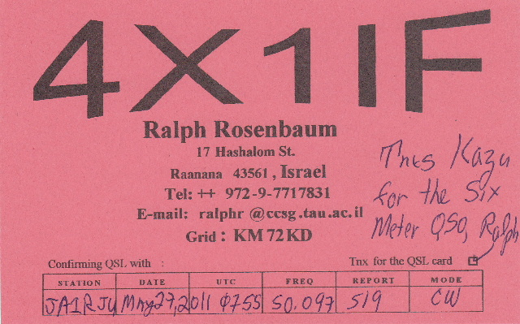
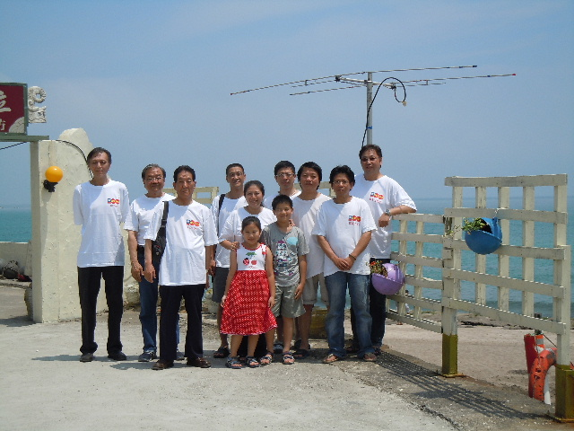

Flash ! DX

 


|
|
|
|

|
|
|
[Back Issues Jul.2011]
TIME:UTC(JST-09:00)
Report from JA1RJU(PM95sq)
31.Jul.2011(15:00d)
JT1FDB 02:55 50.101 CW CQ
JT1FDB 03:30 50.101 CW CQ
BV0PC 06:33 50.100 CW
UR3IFD 07:59 50.1016 CW CQ RST599
UY6IM 08:05 50.095 CW
UT7QF 08:33 50.092 CW CQ
US4EX 08:41 50.087 CW QSO with JA9
UT7QF 09:05 50.092 CW CQ JA RST599
Report from JA1RJU(PM95sq)
30.Jul.2011(15:00d)
BD9BA 00:55 50.103 CW
BD4JWU/4 00:56 50.103 CW AS-146
JT1FDB 01:04 50.101 CW CQ
BD4JWU/4 01:40 50.103 CW @
DS4EOI/2 02:18 50.106 CW CQ
JT1FDB 02:40 50.101 CW CQ
BW9/9M6YBG 02:53 50.102 CW @
BV100 02:59 50.105 CW CQ
Report from JA1RJU(PM95sq)
29.Jul.2011(15:00c)
BD1BYV 01:32 50.098 CW CQ DX
Report from JA1RJU(PM95sq)
28.Jul.2011(15:00c)
JT1FDB 01:53 50.101 CW CQ
JT1FDB 02:20 50.101 CW CQ
Report from JA1RJU(PM95sq)
27.Jul.2011(15:00d)
JT1FDB 01:50 50.101 CW CQ
JT1FDB 02:52 50.101 CW CQ
JT1FDB 03:00 50.150 SSB @
BG4IAK 03:04 50.150 SSB
JT1FDB 03:10 50.101 CW CQ
JT1FDB 06:08 50.101 CW CQ QRT
SP7EXY 06:18 50.083 CW
OH1ND 06:27 50.0985 CW JA8
ON4AOI 06:59 50.083 CW
HA8FK 07:00 50.082 CW
(E74A 07:07 50.083 CW JA1)
SP3RNZ 07:29 50.095 CW
I0WTD 08:00 50.080 CW
ES6RQ 08:00 50.088 CW
ES6RQ 08:06 50.088 CW @
IS0GOX 08:17 50.080 CW
SP3DOI 08:35 50.080 CW
SP5EWY 08:50 50.0855 CW
SP3RNZ 08:51 50.083 CW
Report from JA1RJU(PM95sq)
26.Jul.2011(15:00b)
9K2YM 05:20 50.087 CW
9K2YM 05:40 50.087 CW
Report from JA1RJU(PM95sq)
25.Jul.2011(15:00d)
JT1FDB 01:55 50.101 CW CQ
JT1FDB 02:33 50.101 CW CQ
JT1FDB 03:29 50.101 CW CQ
JT1FDB 04:00 50.101 CW CQ
7月14日に国連の承認も受け、スーダン(ST)から独立して、新しい国「南スーダン共和国」が誕生した。
これで「DXCC」は一つ増え、現在は341となった。
早速、南スーダン共和国からN6PSEをリーダーとする国際隊のメンバーで"ST0R"のコールサインで7/22日から初運用が行われている。
HF帯ではオールバンドで"DXCC NEW"をサービス中だが、一昨日からいよいよ6mにもQRVを始めた。
このDX-Peditionには、6mでアクティブなEA7KW・Joseが参加しており、このバンドでのアクティビティも期待出来そう。既に7/25日の12:55z時現在で、SV1DHやYU7EFなどと6mで124-QSOしており、立地条件の良いヨーロッパとは、Es最盛期の伝搬で更に多くのQSOが見込まれている。
EA7KWは、昨年パレスチナから運用した"E4X"のメンバーでもあり、この時にも多くのJAとQSOしてくれた親日家。
今回もJAを含むAsiaとのQSOを望んでおり、今日も05:30z頃から6mの"Chat"のページに出てきて、JAにアンテナを向けて運用していると情報を流していた。
ただ、今年の夏のEs・シーズンのコンデションは、近場の中近東を除くと、ヨーロッパとの伝搬状態は極端に悪く、昨年の6月21日にヨーロッパ方向からのスキャッター伝搬で入感したスーダンのST2ARの入感当時の面影は無い。昨年の様な伝搬が期待出来ないとなると、スーダンよりもかなり南寄りの"南スーダン"とのオープンの可能性はかなり低いもとなりそう。ST0Rの運用予定は7月22日から8月10日まで。
Report from JA1RJU(PM95sq)
24.Jul.2011(15:00b)
BV2AW 00:48 50.107 CW CQ
Report from JA1RJU(PM95sq)
23.Jul.2011(15:00c)
JT1FDB 05:55 50.101 CW CQ
Report from JA1RJU(PM95sq)
22.Jul.2011(15:00c)
SV1DH 09:50 50.102/105 CW JA3/6
JT1FDB 11:14 50.101 CW JA6
BA1KW 11:43 50.102 CW JA6
Report from JA1RJU(PM95sq)
21.Jul.2011(15:00b)
------------------------------------------------
(大型台風6号関東最接近・太平洋上を通過、東進)
------------------------------------------------
W7EW 07:25 50.085 CW JA8(nil in PM95)
Report from JA1RJU(PM95sq)
20.Jul.2011(10:00b)
------------------------------------------------
(大型台風6号本土接近/静岡・御前崎沖を東進中)
------------------------------------------------
Report from JA1RJU(PM95sq)
19.Jul.2011(15:00c)
DU1EV/B 01:35- 50.008 CW Beacon
VR2SIX/b 01:35- 50.075 CW Beacon
VR2HF 01:37 50.105 CW CQ
BX2AB 08:52 50.110 CW CQ
------------------------------------------------
(大型台風6号接近中・関東地方にも暴風雨の恐れ？)
------------------------------------------------
Report from JA1RJU(PM95sq)
18.Jul.2011(15:00b)
BD4EZC 02:08 50.150 SSB JA6
BA8AG 02:18 50.102 CW CQ
Report from JA1RJU(PM95sq)
17.Jul.2011(15:00d)
HL1IBG 01:30 50.103 CW
DS2MEV 01:34 50.106 CW
BA4SI 01:35 50.120 SSB CQ "WW VHF TEST"
JT1FDB 02:03 50.101 CW CQ
JT1FDB 02:07 50.101 CW @
BD0AH 02:47 50.099 CW @ Wulumuqi City
BD0AH 03:41 50.115 SSB @
JT1BV 03:48 50.085 CW
EX9T 04:09 50.091 CW QSL via EX8MLE
EX9T 04:22 50.091 CW @ UP1-2
JT1FDB 05:29 50.101 CW VVV
-------------------------------------------------
UT1I 05:10 50.101 CW JA6
UU9A 06:06 50.0895 CW JA6
SV1DH 06:41 50.103 CW JA6
SV1DH 08:34 50.086 CW JA6
Report from JA1RJU(PM95sq)
16.Jul.2011(15:00d)
BD4JWU 03:31 50.106 CW
JT1FDB 04:13 50.101 CW
BA8AG 04:14 50.102 CW CQ
HL0NHQ 04:42 50.106 CW QSL via HL4CEL
(A71EM 04:43 50.105 CW QTC)
JT1FDB 05:25 50.101 CW
HL4CEL 06:22 50.106 CW CQ CQ
UN8GC 06:53 50.096 CW RST599
HL1IBG 08:23 50.101 CW CQ
9M6XRO 08:25 50.101 CW QSO with HL1IBG
DU1EV/B 08:28- 50.008 CW Beacon
9M6XRO 08:45 50.1044 CW
BV0PC 09:46 50.105 CW @ UP2
Report from JA1RJU(QM06cb)
15.Jul.2011(15:00d)
BM3DJQ 23:15 50.115 SSB
---------------------------------------
BX100 00:33 50.106 CW CQ
BU2AW 00:53 50.125 SSB
BA8AG 01:03 50.101 CW CQ
BD9BA 01:08 50.101 CW
A92IO 03:50 50.110 SSB
A92IO 03:55 50.106 CW @ RST579
A92IO 04:02 50.106 CW CQ UP1
A65BP 04:07 50.1025 CW @ RST559 QSB
A71EM 04:24 50.098 CW @ RST599
A71EM 04:34 50.098 CW still good UP
A92IO 04:35 50.106 CW still open on freq.
A65BP 04:56 50.1025 CW @ RST599
A92IO 04:59 50.106 CW still good
RW1AY/MM 05:00 50.110 SSB QTH PN61vs
A71EM 05:09 50.098 CW still good UP1-2
A65BP 05:27 50.1025 CW
A92IO 05:27 50.106 CW
A92IO 05:43 50.135 SSB UP5
Report from JA1RJU(QM06cb)
14.Jul.2011(15:00c)
BG2BLM 03:41 50.112 SSB CQ
KS0C/KH2 07:25 50.114 CW QRT(lightning)
KS0C/KH2 07:45 50.114 CW Again! RST599 UP1-2
BD5RV/4 12:13 50.100 CW CQ
Report from JA1RJU(QM06cb)
13.Jul.2011(15:00b)
Report from JA1RJU(PM95sq)
12.Jul.2011(15:00d)
JT0YAB 00:30 50.113 CW @ (QSL via DK1MAX)
JT0YAB 02:38 50.114 SSB @
JT0YPS 02:44 50.114 SSB @ CQ GL=NN48fo(QSL via UA9YPS)
JT0YPS 03:40 50.114 SSB QRT
JT0YPS 04:02 50.114 SSB Again RS59!
UX2HO 05:00 50.094 CW
UX7LT 05:02 50.0955 CW @
UX2HO 05:05 50.094 CW @
UR3IFD 05:10 50.097 CW CQ
UR7CQ 05:22 50.0964 CW @
UT5EA 05:30 50.098 CW @
UX7LT 05:45 50.095 CW
YO8AB 10:16 50.088.5 CW
JT0YAB 13:17 50.113 CW CQ
JT0YAB 13:34 50.113 SSB CQ
JT0YPS 14:00 50.113 SSB
Report from JA1RJU(PM95sq)
11.Jul.2011(15:00c)
Es mult open to US 22:50〜00:00z
(KY5R.W9FF.NW0W.W5KI...etc into PM95-96.QM05.QM07.QN03...etc)
--------------------------------------
UX2HO 04:54 50.0965 CW
Report from JA1RJU(PM95sq)
10.Jul.2011(15:00c)
AA7A 00:35 50.080 CW
NQ7R 01:08 50.094 CW
(N5DG 01:25 50.098 CW JA1)
N6SS 01:32 50.096 CW
WA7JTM 01:43 50.098 CW
W7UT 01:55 50.096 CW
BG2RAH 06:54 50.095 CW CQ
Report from JA1RJU(PM95sq)
09.Jul.2011(15:00b)
KH7Y 01:10 50.105 CW
Report from JA1RJU(PM95sq)
08.Jul.2011(15:00b)
BY1RX/4 00:54 50.108 CW CQ
(4S7AB 06:50 50.084 CW JR6/JA6)
Report from JA1RJU(PM95sq)
07.Jul.2011(15:00d)
DU1EV/B 01:40- 50.008 CW Beacon
BY1RX/4 01:40 50.108 CW CQ
BY1RX/4 02:29 50.118 SSB CQ AS-160
BD4CZX 02:53 50.110 SSB CQ
VR2KW 03:06 50.110 SSB
OE1VIE 06:40 50.082 CW
BY1RX/4 06:54 50.118 CW CQ AS-160
BA4SI 07:07 50.101 CW CQ
(HA0DU 07:57 50.096 CW JA3)
(HA8CE 08:00 50.087 CW JA2.3.6)
Report from JA1RJU(PM95sq)
06.Jul.2011(15:00d)
JT1BV 01:45 50.105 CW
JT1BV 01:56 50.085 CW
A65BP 08:50 50.102 CW
A65BP 09:20 50.102 CW still good!
A45XR 09:27 50.106 CW
A45XR 09:55 50.106 CW CQ still good!
BY1RX/4 09:57 50.109 CW CQ (QSL via BA4TB)
A45XR 10:30 50.106 CW CQ still good!
VU2RBI 12:25 50.092 CW
Report from JA1RJU(PM95sq)
05.Jul.2011(15:00c)
A65BP 04:00 50.102 CW
A65BP 05:00 50.102 CW QRT(05:28z)
BY1RX/4 05:45 50.109 CW CQ
BY1RX/4 07:14 50.109 CW CQ
Report from JA1RJU(PM95sq)
04.Jul.2011(15:00c)
N6ML 00:34 50.085 CW
NA6XX.K6QXY.N6SS.N5JEH... 00:34- CW into QM05/06...etc.
--------------------------------------
BD4EZC 01:13 50.110 CW
BY1RX/4 05:30 50.108 CW @ IOTA AS-160 (QSL via BA4TB)
BG6CJR 12:55 50.115 SSB JA6
Report from JA1RJU(PM95sq)
03.Jul.2011(15:00d)
「6m AND DOWN コンテスト」2011年7月2日(21:00JST)〜3日(15:00JST)
--------------------------------------
BV100 02:27 50.115 SSB
BD8ASG 04:56 50.115 SSB @
BI7LNQ 04:57 50.120 SSB
BD9AFM 05:14 50.125 SSB @
HL4CEL 05:18 50.106 CW
BV100 05:20 50.100 CW
BV1EL 05:26 50.096 CW
4S7AB 05:36 50.085 CW @ RST557/559 with 6m AND DOWN QRMM !
NL7Z 06:25 50.095 CW
Report from JA1RJU(PM95sq)
02.Jul.2011(15:00c)
A65BP 04:45 50.102 CW
A65BP 05:16 50.102 CW @ RST559/559
A45XR 05:17 50.106 CW
BA4SI 06:08 50.106 CW QSO with A45XR
A45XR 06:10 50.106 CW CQ CQ
VU2RBI 06:24 50.098 CW QRZ & CQ!
BV1EK 07:08 50.102 CW
BV1EL 07:10 50.102 CW QSO with BV1EK
--------------------------------------
「6m AND DOWN コンテスト」2011年7月2日(21:00JST)〜3日(15:00JST)
Report from JA1RJU(PM95sq)
01.Jul.2011(15:00d)
DU1EV/B 23:30- 50.008 CW Beacon
VR2XMT 23:45 50.115 SSB
BA4SI 23:46 50.086 CW CQ NA
--------------------------------------
XV1X 01:13 50.0985 CW
VR2XMT 01:17 50.115 SSB
DU1/JJ5GMJ 01:38 50.098 CW
N7ET/DU7 02:11 50.098 CW
XU7AAA 03:00 50.120 CW @ RST599
DU7/PA0HIP 03:02 50.117 SSB
VR2VAZ 03:04 50.117 SSB
9M6XRO 03:12 50.103/100 CW
S59A 05:27 50.081 CW
DU7/PA0HIP 05:35 50.105 CW Worked EU
UT7QF 05:39 50.087 CW @ RST579
UT7QF 05:54 50.092 CW
XV1X 07:05 50.122 CW
4X4DK 07:19 50.088 CW QSO with 9M6XRO
DU7/PA0HIP 07:25 50.107 CW
◎台湾(BV)の事情に詳しいJA3AQM・佐々木光四郎さんからの情報に寄ると、去る6月10日付けで台湾NCCからHF帯を含む新しい周波数の割り当てが発表され、これにより台湾の50MHz帯の使用区分が50.000-50.150MHzに拡張されたとのこと。
従来の台湾の6mバンドは50.000-50.0125MHzと50.110-50.122.5MHzの範囲に限られており、SSBでの運用周波数はかなり狭いものだった。今回の変更により、50.000-50.150MHzが正式に使える様になり、50.110-115MHz付近に集中していた台湾のSSB局は、今後はかなり余裕のある幅での運用が出来るようになった。
また、最近6mで良く聞かれる様になった「BM2***」のコールサインは台湾の4級局が3級に変更になり、HF帯には出られないものの、6mのSSBの運用がOKとなりQRVを開始しました。
50.001MHzに出ていたビーコン局・BV2YA/Bは、新しい運用地は台北市内のマンション屋上から運用予定とのこと。


BV100を運用するJA3AQM・佐々木さん/BV100のメンバーと(TNX JA3AQM)